线性方程组 / Gauss 消元法

解
\(\xrightarrow[-3(1)\rightarrow(4)]{- 1(1)\rightarrow(2) \atop -2(1)\rightarrow(3)}
\left\{\begin{array}{rrrrrrr}
x_1 & +2x_2 & {\textcolor[rgb]{1,0,0}{+3}}x_3 & +4x_4 & = & -3 & (5)\\
& & -3x_3 & -9x_4 & = & 4 & (6)\\
& & {\textcolor[rgb]{1,0,0}{-9}}x_3 & -27x_4 & = & 12 & (7)\\
& &{\textcolor[rgb]{1,0,0}{-12}}x_3 & -36x_4 & = & 16 & (8)\\
\end{array}\right.
\)
\(\xrightarrow[-4(6)\rightarrow(8)]{(6)\rightarrow(5)\atop -3(6)\rightarrow(7)}
\left\{\begin{array}{rrrrrrr}
x_1 & +2x_2 & & -5x_4 & = & 1 & (9)\\
& & {\textcolor[rgb]{1,0,0}{-3}}x_3 & -9x_4 & = & 4 & (10)\\
& & & 0 & = & 0 & (11)\\
& & & 0 & = & 0 & (12)\\
\end{array}\right.
\)
\(\xrightarrow{-\frac13(10)}
\left\{\begin{array}{rrrrrrr}
x_1 & +2x_2 & & -5x_4 & = & 1 & (13)\\
& & x_3 & +3x_4 & = & -\frac43 & (14)\\
& & & 0 & = & 0 & (15)\\
& & & 0 & = & 0 & (16)\\
\end{array}\right.
\)
\(\Rightarrow \left\{
\begin{array}{rl}
x_1 &= 1-2x_2+5x_4\\
x_3 &= -\frac43 - 3x_4\\
\end{array}
\right.\)
因此\(x_2\)和\(x_4\)可取任意值，\(x_1\)和\(x_3\)由\(x_2\)和\(x_4\)的取值唯一确定。 即，
\[\left\{
\begin{array}{rl}
x_1 &= 1-2t_1+5t_2\\
x_2 &= t_1 \\
x_3 &= -\frac43 - 3t_2\\
x_4 &= t_2 \\
\end{array}
\right. \qquad \text{其中} t_1,t_2\in {\mathbb F}.\]
\[\Rightarrow \left\{\begin{array}{rrrrrrr}
x& & &= & 23 && \\
& & y& = & 12 &&\\
\end{array}\right.\]
\[\Rightarrow \left\{
\begin{array}{rl}
x_1 &= 1-2t_1+5t_2\\
x_2 &= t_1 \\
x_3 &= -\frac43 - 3t_2\\
x_4 &= t_2 \\
\end{array}
\right. \qquad \text{其中} t_1,t_2\in \mathbb F.\]
解
\(\xrightarrow[-2(1)\rightarrow(3)]{-1(1)\rightarrow(2)}
\left\{\begin{array}{rrrrrrr}
x_1 & -x_2 & +x_3 & = & 1 & (4)\\
& & -2x_3 & = & 2 & (5)\\
& & -3x_3 & = & 1 & (6)\\
\end{array}\right.\)
\(\xrightarrow[-\frac32(5)\rightarrow(6)]{\frac12(5)\rightarrow(4)}
\left\{\begin{array}{rrrrrrr}
x_1 & -x_2 & & = & 2 & \\
& & -2x_3 & = & 2 & \\
& & {\textcolor[rgb]{1,0,0}{0}} & {\textcolor[rgb]{1,0,0}{=}} & {\textcolor[rgb]{1,0,0}{-2}} & \\
\end{array}\right.\)
\[\Rightarrow \textbf{无解！！}\]
我们称有相同的解集的两个线性方程组互为对方的同解方程组.
证明
这里只给出第三种初等变换的证明，其他两种情形证明类似。
\[
\left\{\begin{array}{ccccccccc}
a_{11}x_1& + & \cdots & + & a_{1n}x_n &= & b_1\\
\vdots & & \ddots && \vdots && \vdots \\
a_{i1}x_1& + & \cdots & + & a_{in}x_n &= & b_i\\
\vdots && \ddots && \vdots && \vdots \\
a_{j1}x_1& + & \cdots & + & a_{jn}x_n &= & b_j\\
\vdots && \ddots && \vdots && \vdots \\
a_{m1}x_1& + & \cdots & + & a_{mn}x_n &= & b_m\\
\end{array}\right.
\underset{-\lambda(i)\rightarrow(j)}{\overset{\lambda(i)\rightarrow(j)}{\rightleftharpoons}}
\left\{\begin{array}{ccccccccc}
a_{11}x_1&+ & \cdots & + & a_{1n}x_n &= & b_1\\
\vdots && \ddots && \vdots && \vdots \\
a_{i1}x_1&+ & \cdots & + & a_{in}x_n &= & b_i\\
\vdots && \ddots && \vdots && \vdots \\
(a_{j1}+\lambda a_{i1})x_1& + & \cdots & + & (a_{jn}+\lambda a_{in})x_n &= & b_j+\lambda b_i\\
\vdots && \ddots && \vdots && \vdots \\
a_{m1}x_1& + & \cdots & + & a_{mn}x_n &= & b_m\\
\end{array}\right.
\]